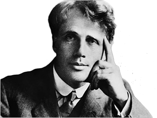

Considered one of greatest American Poets, Frost was born in San Francisco in the year 1874. After a successful career at Harvard University, Frost moved to New Hampshire where he pursued and enjoyed success in his artistic endeavors. Frost is best known for his works that tackle complex social and philosophical issues , especially in New England. After a long life and much success in poetry, Frost passed away in 1963.
 To The Index